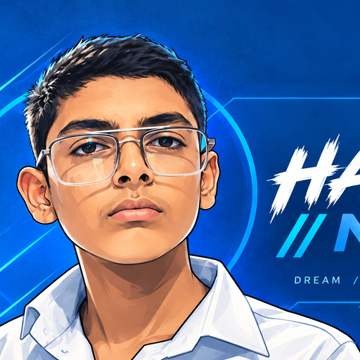

A futuristic digital hub for technology, AI, gaming, experiments and bold ideas.
Monitor the live-looking Nexus core, energy, network and active modules.
Run interactive commands and trigger simulated system events.
Generate signals, unlock hidden mode and explore strange digital events.